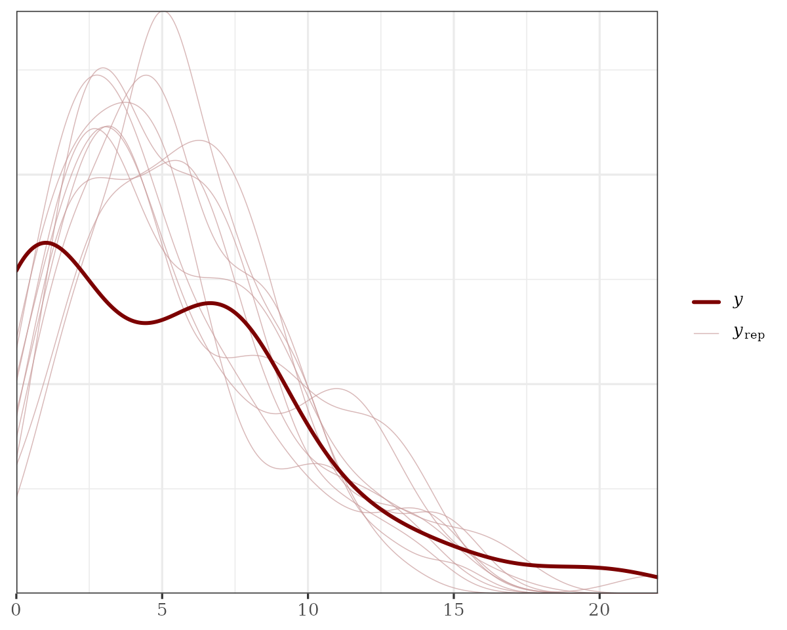
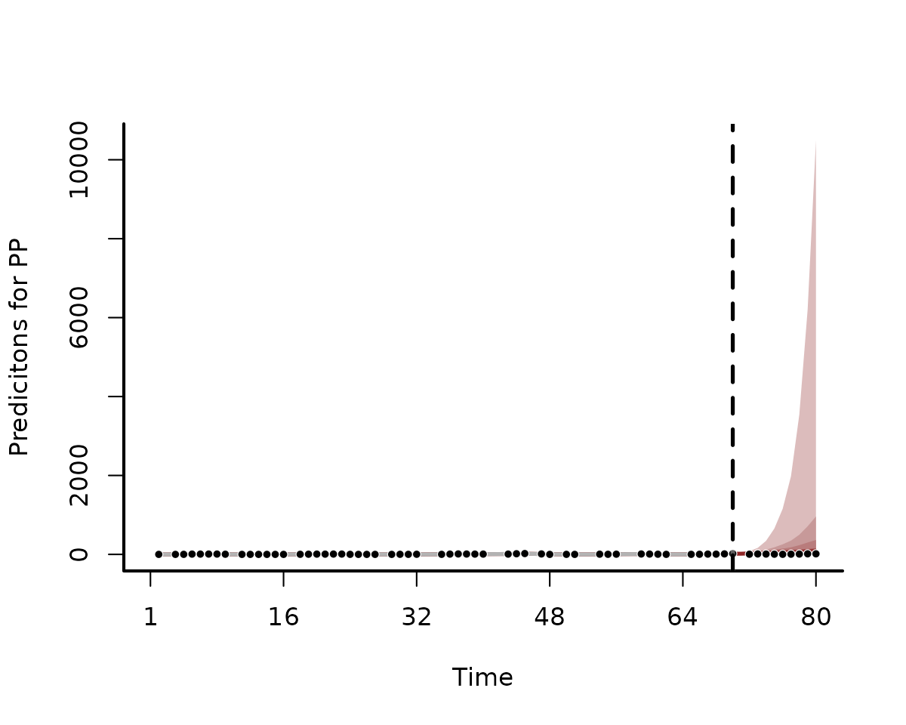

Overview of the mvgam package
Nicholas J Clark
2025-03-10
Source:vignettes/mvgam_overview.Rmd
mvgam_overview.RmdThe purpose of this vignette is to give a general overview of the
mvgam package and its primary functions.
Dynamic GAMs
mvgam is designed to propagate unobserved temporal
processes to capture latent dynamics in the observed time series. This
works in a state-space format, with the temporal trend evolving
independently of the observation process. An introduction to the package
and some worked examples are also shown in this seminar: Ecological Forecasting with Dynamic Generalized Additive
Models. Briefly, assume \(\tilde{\boldsymbol{y}}_{i,t}\) is the
conditional expectation of response variable \(\boldsymbol{i}\) at time \(\boldsymbol{t}\). Assuming \(\boldsymbol{y_i}\) is drawn from an
exponential distribution with an invertible link function, the linear
predictor for a multivariate Dynamic GAM can be written as:
\[for~i~in~1:N_{series}~...\] \[for~t~in~1:N_{timepoints}~...\]
\[g^{-1}(\tilde{\boldsymbol{y}}_{i,t})=\alpha_{i}+\sum\limits_{j=1}^J\boldsymbol{s}_{i,j,t}\boldsymbol{x}_{j,t}+\boldsymbol{Z}\boldsymbol{z}_{k,t}\,,\]
Here \(\alpha\) are the unknown
intercepts, the \(\boldsymbol{s}\)’s
are unknown smooth functions of covariates (\(\boldsymbol{x}\)’s), which can potentially
vary among the response series, and \(\boldsymbol{z}\) are dynamic latent
processes. Each smooth function \(\boldsymbol{s_j}\) is composed of basis
expansions whose coefficients, which must be estimated, control the
functional relationship between \(\boldsymbol{x}_{j}\) and \(g^{-1}(\tilde{\boldsymbol{y}})\). The size
of the basis expansion limits the smooth’s potential complexity. A
larger set of basis functions allows greater flexibility. For more
information on GAMs and how they can smooth through data, see this blogpost on how to interpret nonlinear effects from
Generalized Additive Models. Latent processes are captured with
\(\boldsymbol{Z}\boldsymbol{z}_{i,t}\),
where \(\boldsymbol{Z}\) is an \(i~by~k\) matrix of loading coefficients
(which can be fixed or a combination of fixed and freely estimated
parameters) and \(\boldsymbol{z}_{k,t}\) are a set of \(K\) latent factors that can also include
their own GAM linear predictors (see the State-Space
models vignette), the N-mixtures
vignette and the example in jsdgam
to get an idea of how flexible these processes can be.
Several advantages of GAMs are that they can model a diversity of
response families, including discrete distributions (i.e. Poisson,
Negative Binomial, Gamma) that accommodate common ecological features
such as zero-inflation or overdispersion, and that they can be
formulated to include hierarchical smoothing for multivariate responses.
mvgam supports a number of different observation families,
which are summarized below:
Supported observation families
| Distribution | Function | Support | Extra parameter(s) |
|---|---|---|---|
| Gaussian (identity link) | gaussian() |
Real values in \((-\infty, \infty)\) | \(\sigma\) |
| Student’s T (identity link) | student-t() |
Heavy-tailed real values in \((-\infty, \infty)\) | \(\sigma\), \(\nu\) |
| LogNormal (identity link) | lognormal() |
Positive real values in \([0, \infty)\) | \(\sigma\) |
| Gamma (log link) | Gamma() |
Positive real values in \([0, \infty)\) | \(\alpha\) |
| Beta (logit link) | betar() |
Real values (proportional) in \([0,1]\) | \(\phi\) |
| Bernoulli (logit link) | bernoulli() |
Binary data in \({0,1}\) | - |
| Poisson (log link) | poisson() |
Non-negative integers in \((0,1,2,...)\) | - |
| Negative Binomial2 (log link) | nb() |
Non-negative integers in \((0,1,2,...)\) | \(\phi\) |
| Binomial (logit link) | binomial() |
Non-negative integers in \((0,1,2,...)\) | - |
| Beta-Binomial (logit link) | beta_binomial() |
Non-negative integers in \((0,1,2,...)\) | \(\phi\) |
| Poisson Binomial N-mixture (log link) | nmix() |
Non-negative integers in \((0,1,2,...)\) | - |
For all supported observation families, any extra parameters that
need to be estimated (i.e. the \(\sigma\) in a Gaussian model or the \(\phi\) in a Negative Binomial model) are by
default estimated independently for each series. However, users can opt
to force all series to share extra observation parameters using
share_obs_params = TRUE in mvgam(). Note that
default link functions cannot currently be changed.
Supported temporal dynamic processes
As stated above, the latent processes can take a wide variety of
forms, some of which can be multivariate to allow the different
observational variables to interact or be correlated. When using the
mvgam() function, the user chooses between different
process models with the trend_model argument. Available
process models are described in detail below.
Correlated multivariate processes
If more than one observational unit (usually referred to as ‘series’)
is included in data \((N_{series}
> 1)\), use trend_model = ZMVN() to set up a
model where the outcomes for different observational units may be
correlated according to:
\[\begin{align*} z_{t} & \sim \text{MVNormal}(0, \Sigma) \end{align*}\]
The covariance matrix \(\Sigma\)
will capture potentially correlated process errors. It is parameterised
using a Cholesky factorization, which requires priors on the
series-level variances \(\sigma\) and
on the strength of correlations using Stan’s
lkj_corr_cholesky distribution. Note that this
trend_model does not assume that measurements occur over
time, as users can specify what variable in the
data represents the unit of analysis (i.e. outcomes could
be counts of different species across different sites
or regions, for example; see `?ZMVN()
for guidelines).
Independent Random Walks
Use trend_model = 'RW' or
trend_model = RW() to set up a model where each series in
data has independent latent temporal dynamics of the
form:
\[\begin{align*} z_{i,t} & \sim \text{Normal}(z_{i,t-1}, \sigma_i) \end{align*}\]
Process error parameters \(\sigma\)
are modeled independently for each series. If a moving average process
is required, use trend_model = RW(ma = TRUE) to set up the
following:
\[\begin{align*} z_{i,t} & = z_{i,t-1} + \theta_i * error_{i,t-1} + error_{i,t} \\ error_{i,t} & \sim \text{Normal}(0, \sigma_i) \end{align*}\]
Moving average coefficients \(\theta\) are independently estimated for each series and will be forced to be stationary by default \((abs(\theta)<1)\). Only moving averages of order \(q=1\) are currently allowed.
Multivariate Random Walks
If more than one series is included in data \((N_{series} > 1)\), a multivariate
Random Walk can be set up using
trend_model = RW(cor = TRUE), resulting in the
following:
\[\begin{align*} z_{t} & \sim \text{MVNormal}(z_{t-1}, \Sigma) \end{align*}\]
Where the latent process estimate \(z_t\) now takes the form of a vector. The
covariance matrix \(\Sigma\) will
capture contemporaneously correlated process errors. It is parameterised
using a Cholesky factorization, which requires priors on the
series-level variances \(\sigma\) and
on the strength of correlations using Stan’s
lkj_corr_cholesky distribution.
Moving average terms can also be included for multivariate random walks, in which case the moving average coefficients \(\theta\) will be parameterised as an \(N_{series} * N_{series}\) matrix
Autoregressive processes
Autoregressive models up to \(p=3\),
in which the autoregressive coefficients are estimated independently for
each series, can be used by specifying trend_model = 'AR1',
trend_model = 'AR2', trend_model = 'AR3', or
trend_model = AR(p = 1, 2, or 3). For example, a univariate
AR(1) model takes the form:
\[\begin{align*} z_{i,t} & \sim \text{Normal}(ar1_i * z_{i,t-1}, \sigma_i) \end{align*}\]
All options are the same as for Random Walks, but additional options
will be available for placing priors on the autoregressive coefficients.
By default, these coefficients will not be forced into stationarity, but
users can impose this restriction by changing the upper and lower bounds
on their priors. See ?get_mvgam_priors for more
details.
Vector Autoregressive processes
A Vector Autoregression of order \(p=1\) can be specified if \(N_{series} > 1\) using
trend_model = 'VAR1' or trend_model = VAR(). A
VAR(1) model takes the form:
\[\begin{align*} z_{t} & \sim \text{Normal}(A * z_{t-1}, \Sigma) \end{align*}\]
Where \(A\) is an \(N_{series} * N_{series}\) matrix of
autoregressive coefficients in which the diagonals capture lagged
self-dependence (i.e. the effect of a process at time \(t\) on its own estimate at time \(t+1\)), while off-diagonals capture lagged
cross-dependence (i.e. the effect of a process at time \(t\) on the process for another series at
time \(t+1\)). By default, the
covariance matrix \(\Sigma\) will
assume no process error covariance by fixing the off-diagonals to \(0\). To allow for correlated errors, use
trend_model = 'VAR1cor' or
trend_model = VAR(cor = TRUE). A moving average of order
\(q=1\) can also be included using
trend_model = VAR(ma = TRUE, cor = TRUE).
Note that for all VAR models, stationarity of the process is enforced with a structured prior distribution that is described in detail in Heaps 2022
Heaps, Sarah E. “Enforcing stationarity through the prior in vector autoregressions.” Journal of Computational and Graphical Statistics 32.1 (2023): 74-83.
Hierarchical processes
Several of the above-mentioned trend_model options can
be modified to account for grouping structures in data by
setting up hierarchical latent processes. If an optional grouping
variable (gr; which must be a factor in the
supplied data) exists, users can model hierarchical
residual correlation structures. where the residual correlations for a
specific level of gr are modelled hierarchically:
\[\begin{align*} \Omega_{group} & = \alpha_{cor}\Omega_{global} + (1 - \alpha_{cor})\Omega_{group, local} \end{align*}\]
where \(\Omega_{global}\) is a
global correlation matrix, \(\Omega_{group, local}\) is a local
deviation correlation matrix and \(\alpha_{cor}\) is a weighting parameter
controlling how strongly the local correlation matrix \(\Omega_{group}\) (i.e. the derived
correlation matrix that will be used for each level of the grouping
factor gr) is shrunk towards the global correlation matrix
\(\Omega_{global}\) (larger values of
\(\alpha_{cor}\) indicate a greater
degree of shrinkage, i.e. a greater degree of partial pooling). This
option is valuable for many types of designs where the same
observational units (i.e. financial assets or species,
for example) are measured in different strata (i.e. regions,
countries or experimental units, for example).
Currently hierarchical correlations can be included for
AR(), VAR() or ZMVN()
trend_model options.
Gaussian Processes
The final option for modelling temporal dynamics is to use a Gaussian
Process with squared exponential kernel. These are set up independently
for each series (there is currently no multivariate GP option), using
trend_model = 'GP'. The dynamics for each latent process
are modelled as:
\[\begin{align*} z & \sim \text{MVNormal}(0, \Sigma_{error}) \\ \Sigma_{error}[t_i, t_j] & = \alpha^2 * exp(-0.5 * ((|t_i - t_j| / \rho))^2) \end{align*}\]
The latent dynamic process evolves from a complex, high-dimensional
Multivariate Normal distribution which depends on \(\rho\) (often called the length scale
parameter) to control how quickly the correlations between the model’s
errors decay as a function of time. For these models, covariance decays
exponentially fast with the squared distance (in time) between the
observations. The functions also depend on a parameter \(\alpha\), which controls the marginal
variability of the temporal function at all points; in other words it
controls how much the GP term contributes to the linear predictor.
mvgam capitalizes on some advances that allow GPs to be
approximated using Hilbert space basis functions, which considerably speed up computation at little cost to
accuracy or prediction performance.
Piecewise logistic and linear trends
Modeling growth for many types of time series is often similar to
modeling population growth in natural ecosystems, where there series
exhibits nonlinear growth that saturates at some particular carrying
capacity. The logistic trend model available in {mvgam}
allows for a time-varying capacity \(C(t)\) as well as a non-constant growth
rate. Changes in the base growth rate \(k\) are incorporated by explicitly defining
changepoints throughout the training period where the growth rate is
allowed to vary. The changepoint vector \(a\) is represented as a vector of
1s and 0s, and the rate of growth at time
\(t\) is represented as \(k+a(t)^T\delta\). Potential changepoints
are selected uniformly across the training period, and the number of
changepoints, as well as the flexibility of the potential rate changes
at these changepoints, can be controlled using
trend_model = PW(). The full piecewise logistic growth
model is then:
\[\begin{align*} z_t & = \frac{C_t}{1 + \exp(-(k+a(t)^T\delta)(t-(m+a(t)^T\gamma)))} \end{align*}\]
For time series that do not appear to exhibit saturating growth, a piece-wise constant rate of growth can often provide a useful trend model. The piecewise linear trend is defined as:
\[\begin{align*} z_t & = (k+a(t)^T\delta)t + (m+a(t)^T\gamma) \end{align*}\]
In both trend models, \(m\) is an offset parameter that controls the trend intercept. Because of this parameter, it is not recommended that you include an intercept in your observation formula because this will not be identifiable. You can read about the full description of piecewise linear and logistic trends in this paper by Taylor and Letham.
Sean J. Taylor and Benjamin Letham. “Forecasting at scale.” The American Statistician 72.1 (2018): 37-45.
Continuous time AR(1) processes
Most trend models in the mvgam() function expect time to
be measured in regularly-spaced, discrete intervals (i.e. one
measurement per week, or one per year for example). But some time series
are taken at irregular intervals and we’d like to model autoregressive
properties of these. The trend_model = CAR() can be useful
to set up these models, which currently only support autoregressive
processes of order 1. The evolution of the latent dynamic
process follows the form:
\[\begin{align*} z_{i,t} & \sim \text{Normal}(ar1_i^{distance} * z_{i,t-1}, \sigma_i) \end{align*}\]
Where \(distance\) is a vector of
non-negative measurements of the time differences between successive
observations. See the Examples section in
?CAR for an illustration of how to set these models up.
Regression formulae
mvgam supports an observation model regression formula,
built off the mgcv package, as well as an optional process
model regression formula. The formulae supplied to are exactly like
those supplied to glm() except that smooth terms,
s(), te(), ti() and
t2(), time-varying effects using dynamic(),
monotonically increasing (using s(x, bs = 'moi')) or
decreasing splines (using s(x, bs = 'mod'); see
?smooth.construct.moi.smooth.spec for details), as well as
Gaussian Process functions using gp(), can be added to the
right hand side (and . is not supported in
mvgam formulae). See ?mvgam_formulae for more
guidance.
For setting up State-Space models, the optional process model formula can be used (see the State-Space model vignette and the shared latent states vignette for guidance on using trend formulae).
Example time series data
The ‘portal_data’ object contains time series of rodent captures from the Portal Project, a long-term monitoring study based near the town of Portal, Arizona. Researchers have been operating a standardized set of baited traps within 24 experimental plots at this site since the 1970’s. Sampling follows the lunar monthly cycle, with observations occurring on average about 28 days apart. However, missing observations do occur due to difficulties accessing the site (weather events, COVID disruptions etc…). You can read about the full sampling protocol in this preprint by Ernest et al on the Biorxiv.
data("portal_data")As the data come pre-loaded with the mvgam package, you
can read a little about it in the help page using
?portal_data. Before working with data, it is important to
inspect how the data are structured, first using head:
head(portal_data)
#> time series captures ndvi_ma12 mintemp
#> 1 1 DM 20 -0.1721441 -0.7963381
#> 2 1 DO 2 -0.1721441 -0.7963381
#> 3 1 PB 0 -0.1721441 -0.7963381
#> 4 1 PP 0 -0.1721441 -0.7963381
#> 5 2 DM NA -0.2373635 -1.3347160
#> 6 2 DO NA -0.2373635 -1.3347160But the glimpse function in dplyr is also
useful for understanding how variables are structured
dplyr::glimpse(portal_data)
#> Rows: 320
#> Columns: 5
#> $ time <int> 1, 1, 1, 1, 2, 2, 2, 2, 3, 3, 3, 3, 4, 4, 4, 4, 5, 5, 5, 5, …
#> $ series <fct> DM, DO, PB, PP, DM, DO, PB, PP, DM, DO, PB, PP, DM, DO, PB, …
#> $ captures <int> 20, 2, 0, 0, NA, NA, NA, NA, 36, 5, 0, 0, 40, 3, 0, 1, 29, 3…
#> $ ndvi_ma12 <dbl> -0.172144125, -0.172144125, -0.172144125, -0.172144125, -0.2…
#> $ mintemp <dbl> -0.79633807, -0.79633807, -0.79633807, -0.79633807, -1.33471…We will focus analyses on the time series of captures for one specific rodent species, the Desert Pocket Mouse Chaetodipus penicillatus. This species is interesting in that it goes into a kind of “hibernation” during the colder months, leading to very low captures during the winter period
Manipulating data for modelling
Manipulating the data into a ‘long’ format is necessary for modelling
in mvgam. By ‘long’ format, we mean that each
series x time observation needs to have its own entry in
the dataframe or list object that we wish to
use as data for modelling. A simple example can be viewed by simulating
data using the sim_mvgam function. See
?sim_mvgam for more details
data <- sim_mvgam(n_series = 4, T = 24)
head(data$data_train, 12)
#> y season year series time
#> 1 0 1 1 series_1 1
#> 2 0 1 1 series_2 1
#> 3 3 1 1 series_3 1
#> 4 0 1 1 series_4 1
#> 5 3 2 1 series_1 2
#> 6 3 2 1 series_2 2
#> 7 3 2 1 series_3 2
#> 8 5 2 1 series_4 2
#> 9 1 3 1 series_1 3
#> 10 0 3 1 series_2 3
#> 11 4 3 1 series_3 3
#> 12 5 3 1 series_4 3Notice how we have four different time series in these simulated
data, but we do not spread the outcome values into different columns.
Rather, there is only a single column for the outcome variable, labelled
y in these simulated data. We also must supply a variable
labelled time to ensure the modelling software knows how to
arrange the time series when building models. This setup still allows us
to formulate multivariate time series models, as you can see in the State-Space
vignette. Below are the steps needed to shape our
portal_data object into the correct form. First, we create
a time variable, select the column representing counts of
our target species (PP), and select appropriate variables
that we can use as predictors
portal_data %>%
# Filter the data to only contain captures of the 'PP'
dplyr::filter(series == 'PP') %>%
droplevels() %>%
dplyr::mutate(count = captures) %>%
# Add a 'year' variable
dplyr::mutate(year = sort(rep(1:8, 12))[time]) %>%
# Select the variables of interest to keep in the model_data
dplyr::select(series, year, time, count, mintemp, ndvi_ma12) -> model_dataThe data now contain six variables:series, a factor indexing which time series each
observation belongs toyear, the year of samplingtime, the indicator of which time step each observation
belongs tocount, the response variable representing the number of
captures of the species PP in each sampling
observationmintemp, the monthly average minimum temperature at each
time stepndvi_ma12, a 12-month moving average of the monthly
Normalized Difference Vegetation Index at each time step
Now check the data structure again
head(model_data)
#> series year time count mintemp ndvi_ma12
#> 1 PP 1 1 0 -0.79633807 -0.17214413
#> 2 PP 1 2 NA -1.33471597 -0.23736348
#> 3 PP 1 3 0 -1.24166462 -0.21212064
#> 4 PP 1 4 1 -1.08048145 -0.16043812
#> 5 PP 1 5 7 -0.42447625 -0.08267729
#> 6 PP 1 6 7 0.06532892 -0.03692877
dplyr::glimpse(model_data)
#> Rows: 80
#> Columns: 6
#> $ series <fct> PP, PP, PP, PP, PP, PP, PP, PP, PP, PP, PP, PP, PP, PP, PP, …
#> $ year <int> 1, 1, 1, 1, 1, 1, 1, 1, 1, 1, 1, 1, 2, 2, 2, 2, 2, 2, 2, 2, …
#> $ time <int> 1, 2, 3, 4, 5, 6, 7, 8, 9, 10, 11, 12, 13, 14, 15, 16, 17, 1…
#> $ count <int> 0, NA, 0, 1, 7, 7, 8, 8, 4, NA, 0, 0, 0, 0, 0, 0, NA, 2, 4, …
#> $ mintemp <dbl> -0.79633807, -1.33471597, -1.24166462, -1.08048145, -0.42447…
#> $ ndvi_ma12 <dbl> -0.172144125, -0.237363477, -0.212120638, -0.160438125, -0.0…You can also summarize multiple variables, which is helpful to search for data ranges and identify missing values
summary(model_data)
#> series year time count mintemp
#> PP:80 Min. :1.00 Min. : 1.00 Min. : 0.000 Min. :-2.0978
#> 1st Qu.:2.00 1st Qu.:20.75 1st Qu.: 1.000 1st Qu.:-1.0808
#> Median :4.00 Median :40.50 Median : 5.000 Median :-0.4091
#> Mean :3.85 Mean :40.50 Mean : 5.222 Mean :-0.2151
#> 3rd Qu.:5.25 3rd Qu.:60.25 3rd Qu.: 8.000 3rd Qu.: 0.6133
#> Max. :7.00 Max. :80.00 Max. :21.000 Max. : 1.4530
#> NA's :17
#> ndvi_ma12
#> Min. :-0.66884
#> 1st Qu.:-0.20869
#> Median :-0.16517
#> Mean :-0.09501
#> 3rd Qu.:-0.03440
#> Max. : 0.74831
#> We have some NAs in our response variable
count. These observations will generally be thrown out by
most modelling packages in . But as you will see when we work through
the tutorials, mvgam keeps these in the data so that
predictions can be automatically returned for the full dataset. The time
series and some of its descriptive features can be plotted using
plot_mvgam_series():
plot_mvgam_series(data = model_data, series = 1, y = "count")GLMs with temporal random effects
Our first task will be to fit a Generalized Linear Model (GLM) that
can adequately capture the features of our count
observations (integer data, lower bound at zero, missing values) while
also attempting to model temporal variation. We are almost ready to fit
our first model, which will be a GLM with Poisson observations, a log
link function and random (hierarchical) intercepts for
year. This will allow us to capture our prior belief that,
although each year is unique, having been sampled from the same
population of effects, all years are connected and thus might contain
valuable information about one another. This will be done by
capitalizing on the partial pooling properties of hierarchical models.
Hierarchical (also known as random) effects offer many advantages when
modelling data with grouping structures (i.e. multiple species,
locations, years etc…). The ability to incorporate these in time series
models is a huge advantage over traditional models such as ARIMA or
Exponential Smoothing. But before we fit the model, we will need to
convert year to a factor so that we can use a random effect
basis in mvgam. See ?smooth.terms and
?smooth.construct.re.smooth.spec for details about the
re basis construction that is used by both
mvgam and mgcv
model_data %>%
# Create a 'year_fac' factor version of 'year'
dplyr::mutate(year_fac = factor(year)) -> model_dataPreview the dataset to ensure year is now a factor with a unique factor level for each year in the data
dplyr::glimpse(model_data)
#> Rows: 80
#> Columns: 7
#> $ series <fct> PP, PP, PP, PP, PP, PP, PP, PP, PP, PP, PP, PP, PP, PP, PP, …
#> $ year <int> 1, 1, 1, 1, 1, 1, 1, 1, 1, 1, 1, 1, 2, 2, 2, 2, 2, 2, 2, 2, …
#> $ time <int> 1, 2, 3, 4, 5, 6, 7, 8, 9, 10, 11, 12, 13, 14, 15, 16, 17, 1…
#> $ count <int> 0, NA, 0, 1, 7, 7, 8, 8, 4, NA, 0, 0, 0, 0, 0, 0, NA, 2, 4, …
#> $ mintemp <dbl> -0.79633807, -1.33471597, -1.24166462, -1.08048145, -0.42447…
#> $ ndvi_ma12 <dbl> -0.172144125, -0.237363477, -0.212120638, -0.160438125, -0.0…
#> $ year_fac <fct> 1, 1, 1, 1, 1, 1, 1, 1, 1, 1, 1, 1, 2, 2, 2, 2, 2, 2, 2, 2, …
levels(model_data$year_fac)
#> [1] "1" "2" "3" "4" "5" "6" "7"We are now ready for our first mvgam model. The syntax
will be familiar to users who have previously built models with
mgcv. But for a refresher, see ?formula.gam
and the examples in ?gam. Random effects can be specified
using the s wrapper with the re basis. Note
that we can also suppress the primary intercept using the usual
R formula syntax - 1. mvgam has a
number of possible observation families that can be used, see
?mvgam_families for more information. We will use
Stan as the fitting engine, which deploys Hamiltonian Monte
Carlo (HMC) for full Bayesian inference. By default, 4 HMC chains will
be run using a warmup of 500 iterations and collecting 500 posterior
samples from each chain. The package will also aim to use the
Cmdstan backend when possible, so it is recommended that
users have an up-to-date installation of Cmdstan and the
associated cmdstanr interface on their machines (note that
you can set the backend yourself using the backend
argument: see ?mvgam for details). Interested users should
consult the Stan user’s guide for more information
about the software and the enormous variety of models that can be
tackled with HMC.
The model can be described mathematically for each timepoint \(t\) as follows: \[\begin{align*} \boldsymbol{count}_t & \sim \text{Poisson}(\lambda_t) \\ log(\lambda_t) & = \beta_{year[year_t]} \\ \beta_{year} & \sim \text{Normal}(\mu_{year}, \sigma_{year}) \end{align*}\]
Where the \(\beta_{year}\) effects
are drawn from a population distribution that is parameterized
by a common mean \((\mu_{year})\) and
variance \((\sigma_{year})\). Priors on
most of the model parameters can be interrogated and changed using
similar functionality to the options available in brms. For
example, the default priors on \((\mu_{year})\) and \((\sigma_{year})\) can be viewed using the
following code:
get_mvgam_priors(count ~ s(year_fac, bs = "re") - 1,
family = poisson(),
data = model_data
)
#> param_name param_length param_info
#> 1 vector[1] mu_raw; 1 s(year_fac) pop mean
#> 2 vector<lower=0>[1] sigma_raw; 1 s(year_fac) pop sd
#> prior example_change
#> 1 mu_raw ~ std_normal(); mu_raw ~ normal(0.45, 0.81);
#> 2 sigma_raw ~ student_t(3, 0, 2.5); sigma_raw ~ exponential(0.8);
#> new_lowerbound new_upperbound
#> 1 NA NA
#> 2 NA NASee examples in ?get_mvgam_priors to find out different
ways that priors can be altered. Once the model has finished, the first
step is to inspect the summary to ensure no major
diagnostic warnings have been produced and to quickly summarise
posterior distributions for key parameters
summary(model1)
#> GAM formula:
#> count ~ s(year_fac, bs = "re") - 1
#>
#> Family:
#> poisson
#>
#> Link function:
#> log
#>
#> Trend model:
#> None
#>
#> N series:
#> 1
#>
#> N timepoints:
#> 80
#>
#> Status:
#> Fitted using Stan
#> 4 chains, each with iter = 1000; warmup = 500; thin = 1
#> Total post-warmup draws = 2000
#>
#>
#> GAM coefficient (beta) estimates:
#> 2.5% 50% 97.5% Rhat n_eff
#> s(year_fac).1 0.92 1.20 1.60 1.01 1246
#> s(year_fac).2 0.84 1.20 1.50 1.00 1628
#> s(year_fac).3 0.02 0.54 0.99 1.01 1009
#> s(year_fac).4 2.10 2.30 2.50 1.00 2142
#> s(year_fac).5 1.10 1.50 1.80 1.00 1595
#> s(year_fac).6 1.60 1.80 2.10 1.00 2264
#> s(year_fac).7 1.80 2.10 2.30 1.00 1919
#>
#> GAM group-level estimates:
#> 2.5% 50% 97.5% Rhat n_eff
#> mean(s(year_fac)) 0.28 1.40 1.9 1.32 17
#> sd(s(year_fac)) 0.40 0.75 1.9 1.31 18
#>
#> Approximate significance of GAM smooths:
#> edf Ref.df Chi.sq p-value
#> s(year_fac) 5.98 7 237 <2e-16 ***
#> ---
#> Signif. codes: 0 '***' 0.001 '**' 0.01 '*' 0.05 '.' 0.1 ' ' 1
#>
#> Stan MCMC diagnostics:
#> n_eff / iter looks reasonable for all parameters
#> Rhats above 1.05 found for 3 parameters
#> *Diagnose further to investigate why the chains have not mixed
#> 39 of 2000 iterations ended with a divergence (1.95%)
#> *Try running with larger adapt_delta to remove the divergences
#> 0 of 2000 iterations saturated the maximum tree depth of 10 (0%)
#> E-FMI indicated no pathological behavior
#>
#> Samples were drawn using NUTS(diag_e) at Mon Mar 10 03:14:48 2025.
#> For each parameter, n_eff is a crude measure of effective sample size,
#> and Rhat is the potential scale reduction factor on split MCMC chains
#> (at convergence, Rhat = 1)
#>
#> Use how_to_cite(model1) to get started describing this modelThe diagnostic messages at the bottom of the summary show that the
HMC sampler did not encounter any problems or difficult posterior
spaces. This is a good sign. Posterior distributions for model
parameters can be extracted in any way that an object of class
brmsfit can (see ?mvgam::mvgam_draws for
details). For example, we can extract the coefficients related to the
GAM linear predictor (i.e. the \(\beta\)’s) into a data.frame
using:
beta_post <- as.data.frame(model1, variable = "betas")
dplyr::glimpse(beta_post)
#> Rows: 2,000
#> Columns: 7
#> $ `s(year_fac).1` <dbl> 1.245070, 1.285800, 1.216220, 1.296010, 1.438780, 1.32…
#> $ `s(year_fac).2` <dbl> 1.249580, 1.289030, 1.161930, 1.058330, 1.153170, 0.86…
#> $ `s(year_fac).3` <dbl> 0.554622, 0.596707, 0.583738, 0.413943, 0.563928, 0.43…
#> $ `s(year_fac).4` <dbl> 2.42595, 2.24411, 2.28603, 2.29768, 2.25969, 2.36823, …
#> $ `s(year_fac).5` <dbl> 1.44169, 1.53097, 1.45494, 1.41810, 1.59024, 1.51911, …
#> $ `s(year_fac).6` <dbl> 1.90669, 1.87953, 1.55054, 1.65842, 2.01540, 1.64681, …
#> $ `s(year_fac).7` <dbl> 2.16900, 2.23049, 2.05189, 2.08416, 2.12217, 2.13521, …With any model fitted in mvgam, the underlying
Stan code can be viewed using the code
function:
code(model1)
#> // Stan model code generated by package mvgam
#> data {
#> int<lower=0> total_obs; // total number of observations
#> int<lower=0> n; // number of timepoints per series
#> int<lower=0> n_series; // number of series
#> int<lower=0> num_basis; // total number of basis coefficients
#> matrix[total_obs, num_basis] X; // mgcv GAM design matrix
#> array[n, n_series] int<lower=0> ytimes; // time-ordered matrix (which col in X belongs to each [time, series] observation?)
#> int<lower=0> n_nonmissing; // number of nonmissing observations
#> array[n_nonmissing] int<lower=0> flat_ys; // flattened nonmissing observations
#> matrix[n_nonmissing, num_basis] flat_xs; // X values for nonmissing observations
#> array[n_nonmissing] int<lower=0> obs_ind; // indices of nonmissing observations
#> }
#> parameters {
#> // raw basis coefficients
#> vector[num_basis] b_raw;
#>
#> // random effect variances
#> vector<lower=0>[1] sigma_raw;
#>
#> // random effect means
#> vector[1] mu_raw;
#> }
#> transformed parameters {
#> // basis coefficients
#> vector[num_basis] b;
#> b[1 : 7] = mu_raw[1] + b_raw[1 : 7] * sigma_raw[1];
#> }
#> model {
#> // prior for random effect population variances
#> sigma_raw ~ student_t(3, 0, 2.5);
#>
#> // prior for random effect population means
#> mu_raw ~ std_normal();
#>
#> // prior (non-centred) for s(year_fac)...
#> b_raw[1 : 7] ~ std_normal();
#> {
#> // likelihood functions
#> flat_ys ~ poisson_log_glm(flat_xs, 0.0, b);
#> }
#> }
#> generated quantities {
#> vector[total_obs] eta;
#> matrix[n, n_series] mus;
#> array[n, n_series] int ypred;
#>
#> // posterior predictions
#> eta = X * b;
#> for (s in 1 : n_series) {
#> mus[1 : n, s] = eta[ytimes[1 : n, s]];
#> ypred[1 : n, s] = poisson_log_rng(mus[1 : n, s]);
#> }
#> }Plotting effects and residuals
Now for interrogating the model. We can get some sense of the
variation in yearly intercepts from the summary above, but it is easier
to understand them using targeted plots. Plot posterior distributions of
the temporal random effects using plot.mvgam with
type = 're'. See ?plot.mvgam for more details
about the types of plots that can be produced from fitted
mvgam objects
plot(model1, type = "re")
bayesplot support
We can also capitalize on most of the useful MCMC plotting functions
from the bayesplot package to visualize posterior
distributions and diagnostics (see ?mvgam::mcmc_plot.mvgam
for details):
mcmc_plot(
object = model1,
variable = "betas",
type = "areas"
)We can also use the wide range of posterior checking functions
available in bayesplot (see
?mvgam::ppc_check.mvgam for details):
pp_check(object = model1)
There is clearly some variation in these yearly intercept estimates.
But how do these translate into time-varying predictions? To understand
this, we can plot posterior hindcasts from this model for the training
period using plot.mvgam with
type = 'forecast'
plot(model1, type = "forecast")
If you wish to extract these hindcasts for other downstream analyses,
the hindcast function can be used. This will return a list
object of class mvgam_forecast. In the
hindcasts slot, a matrix of posterior retrodictions will be
returned for each series in the data (only one series in our
example):
hc <- hindcast(model1)
str(hc)
#> List of 15
#> $ call :Class 'formula' language count ~ s(year_fac, bs = "re") - 1
#> .. ..- attr(*, ".Environment")=<environment: R_GlobalEnv>
#> $ trend_call : NULL
#> $ family : chr "poisson"
#> $ trend_model : chr "None"
#> $ drift : logi FALSE
#> $ use_lv : logi FALSE
#> $ fit_engine : chr "stan"
#> $ type : chr "response"
#> $ series_names : chr "PP"
#> $ train_observations:List of 1
#> ..$ PP: int [1:80] 0 NA 0 1 7 7 8 8 4 NA ...
#> $ train_times : int [1:80] 1 2 3 4 5 6 7 8 9 10 ...
#> $ test_observations : NULL
#> $ test_times : NULL
#> $ hindcasts :List of 1
#> ..$ PP: num [1:2000, 1:80] 3 4 4 4 4 3 7 5 5 1 ...
#> .. ..- attr(*, "dimnames")=List of 2
#> .. .. ..$ : NULL
#> .. .. ..$ : chr [1:80] "ypred[1,1]" "ypred[2,1]" "ypred[3,1]" "ypred[4,1]" ...
#> $ forecasts : NULL
#> - attr(*, "class")= chr "mvgam_forecast"You can also extract these hindcasts on the linear predictor scale, which in this case is the log scale (our Poisson GLM used a log link function). Sometimes this can be useful for asking more targeted questions about drivers of variation:
In any regression analysis, a key question is whether the residuals
show any patterns that can be indicative of un-modelled sources of
variation. For GLMs, we can use a modified residual called the Dunn-Smyth,
or randomized quantile, residual. Inspect Dunn-Smyth residuals from
the model using plot.mvgam with
type = 'residuals'
plot(model1, type = "residuals")
Automatic forecasting for new data
These temporal random effects do not have a sense of “time”. Because
of this, each yearly random intercept is not restricted in some way to
be similar to the previous yearly intercept. This drawback becomes
evident when we predict for a new year. To do this, we can repeat the
exercise above but this time will split the data into training and
testing sets before re-running the model. We can then supply the test
set as newdata. For splitting, we will make use of the
filter function from dplyr
model_data %>%
dplyr::filter(time <= 70) -> data_train
model_data %>%
dplyr::filter(time > 70) -> data_test
model1b <- mvgam(count ~ s(year_fac, bs = "re") - 1,
family = poisson(),
data = data_train,
newdata = data_test
)We can view the test data in the forecast plot to see that the predictions do not capture the temporal variation in the test set
plot(model1b, type = "forecast", newdata = data_test)
As with the hindcast function, we can use the
forecast function to automatically extract the posterior
distributions for these predictions. This also returns an object of
class mvgam_forecast, but now it will contain both the
hindcasts and forecasts for each series in the data:
fc <- forecast(model1b)
str(fc)
#> List of 16
#> $ call :Class 'formula' language count ~ s(year_fac, bs = "re") - 1
#> .. ..- attr(*, ".Environment")=<environment: R_GlobalEnv>
#> $ trend_call : NULL
#> $ family : chr "poisson"
#> $ family_pars : NULL
#> $ trend_model : chr "None"
#> $ drift : logi FALSE
#> $ use_lv : logi FALSE
#> $ fit_engine : chr "stan"
#> $ type : chr "response"
#> $ series_names : Factor w/ 1 level "PP": 1
#> $ train_observations:List of 1
#> ..$ PP: int [1:70] 0 NA 0 1 7 7 8 8 4 NA ...
#> $ train_times : int [1:70] 1 2 3 4 5 6 7 8 9 10 ...
#> $ test_observations :List of 1
#> ..$ PP: int [1:10] NA 4 11 8 5 2 5 8 14 14
#> $ test_times : int [1:10] 71 72 73 74 75 76 77 78 79 80
#> $ hindcasts :List of 1
#> ..$ PP: num [1:2000, 1:70] 3 1 4 7 1 7 2 8 0 4 ...
#> .. ..- attr(*, "dimnames")=List of 2
#> .. .. ..$ : NULL
#> .. .. ..$ : chr [1:70] "ypred[1,1]" "ypred[2,1]" "ypred[3,1]" "ypred[4,1]" ...
#> $ forecasts :List of 1
#> ..$ PP: num [1:2000, 1:10] 8 2 4 5 6 4 5 7 11 5 ...
#> .. ..- attr(*, "dimnames")=List of 2
#> .. .. ..$ : NULL
#> .. .. ..$ : chr [1:10] "ypred[71,1]" "ypred[72,1]" "ypred[73,1]" "ypred[74,1]" ...
#> - attr(*, "class")= chr "mvgam_forecast"Adding predictors as “fixed” effects
Any users familiar with GLMs will know that we nearly always wish to
include predictor variables that may explain some of the variation in
our observations. Predictors are easily incorporated into GLMs / GAMs.
Here, we will update the model from above by including a parametric
(fixed) effect of ndvi_ma12 as a linear predictor:
model2 <- mvgam(
count ~ s(year_fac, bs = "re") +
ndvi_ma12 - 1,
family = poisson(),
data = data_train,
newdata = data_test
)The model can be described mathematically as follows: \[\begin{align*} \boldsymbol{count}_t & \sim \text{Poisson}(\lambda_t) \\ log(\lambda_t) & = \beta_{year[year_t]} + \beta_{ndvi} * \boldsymbol{ndvi}_t \\ \beta_{year} & \sim \text{Normal}(\mu_{year}, \sigma_{year}) \\ \beta_{ndvi} & \sim \text{Normal}(0, 1) \end{align*}\]
Where the \(\beta_{year}\) effects
are the same as before but we now have another predictor \((\beta_{ndvi})\) that applies to the
ndvi_ma12 value at each timepoint \(t\). Inspect the summary of this model
summary(model2)
#> GAM formula:
#> count ~ ndvi_ma12 + s(year_fac, bs = "re") - 1
#>
#> Family:
#> poisson
#>
#> Link function:
#> log
#>
#> Trend model:
#> None
#>
#> N series:
#> 1
#>
#> N timepoints:
#> 80
#>
#> Status:
#> Fitted using Stan
#> 4 chains, each with iter = 1000; warmup = 500; thin = 1
#> Total post-warmup draws = 2000
#>
#>
#> GAM coefficient (beta) estimates:
#> 2.5% 50% 97.5% Rhat n_eff
#> ndvi_ma12 -0.3900 0.053 0.49 1.01 1274
#> s(year_fac).1 0.9200 1.300 1.50 1.00 2269
#> s(year_fac).2 0.8400 1.200 1.50 1.00 2154
#> s(year_fac).3 0.0084 0.540 0.98 1.00 2016
#> s(year_fac).4 2.0000 2.300 2.50 1.00 1828
#> s(year_fac).5 1.1000 1.500 1.80 1.00 2532
#> s(year_fac).6 1.6000 1.800 2.10 1.00 2516
#> s(year_fac).7 -0.6400 1.300 3.00 1.00 761
#>
#> GAM group-level estimates:
#> 2.5% 50% 97.5% Rhat n_eff
#> mean(s(year_fac)) 0.34 1.30 1.9 1.01 357
#> sd(s(year_fac)) 0.39 0.73 1.8 1.01 329
#>
#> Approximate significance of GAM smooths:
#> edf Ref.df Chi.sq p-value
#> s(year_fac) 4.83 7 195 <2e-16 ***
#> ---
#> Signif. codes: 0 '***' 0.001 '**' 0.01 '*' 0.05 '.' 0.1 ' ' 1
#>
#> Stan MCMC diagnostics:
#> n_eff / iter looks reasonable for all parameters
#> Rhat looks reasonable for all parameters
#> 8 of 2000 iterations ended with a divergence (0.4%)
#> *Try running with larger adapt_delta to remove the divergences
#> 0 of 2000 iterations saturated the maximum tree depth of 10 (0%)
#> E-FMI indicated no pathological behavior
#>
#> Samples were drawn using NUTS(diag_e) at Mon Mar 10 03:15:09 2025.
#> For each parameter, n_eff is a crude measure of effective sample size,
#> and Rhat is the potential scale reduction factor on split MCMC chains
#> (at convergence, Rhat = 1)
#>
#> Use how_to_cite(model2) to get started describing this modelRather than printing the summary each time, we can also quickly look
at the posterior empirical quantiles for the fixed effect of
ndvi (and other linear predictor coefficients) using
coef:
coef(model2)
#> 2.5% 50% 97.5% Rhat n_eff
#> ndvi_ma12 -0.394111800 0.0534174 0.4884659 1.01 1274
#> s(year_fac).1 0.919884200 1.2575200 1.5497105 1.00 2269
#> s(year_fac).2 0.844244800 1.1904600 1.4989497 1.00 2154
#> s(year_fac).3 0.008391468 0.5408375 0.9809833 1.00 2016
#> s(year_fac).4 2.035659500 2.2731850 2.5055157 1.00 1828
#> s(year_fac).5 1.097404750 1.4580450 1.7958160 1.00 2532
#> s(year_fac).6 1.568516000 1.8477850 2.1104470 1.00 2516
#> s(year_fac).7 -0.635734725 1.3254800 2.9996897 1.00 761Look at the estimated effect of ndvi using using a
histogram. This can be done by first extracting the posterior
coefficients:
beta_post <- as.data.frame(model2, variable = "betas")
dplyr::glimpse(beta_post)
#> Rows: 2,000
#> Columns: 8
#> $ ndvi_ma12 <dbl> 0.2347150, 0.3381700, -0.0128221, -0.0020126, 0.229804…
#> $ `s(year_fac).1` <dbl> 1.446160, 1.152590, 1.087220, 1.476250, 1.138040, 1.38…
#> $ `s(year_fac).2` <dbl> 1.248230, 1.104880, 1.093180, 1.192980, 1.227460, 1.43…
#> $ `s(year_fac).3` <dbl> 0.70809800, 0.73378300, 0.74490600, 0.55596200, 0.7682…
#> $ `s(year_fac).4` <dbl> 2.38926, 2.32447, 2.23713, 2.19773, 2.29684, 2.16591, …
#> $ `s(year_fac).5` <dbl> 1.16114, 1.71426, 1.72097, 1.28350, 1.25668, 1.64337, …
#> $ `s(year_fac).6` <dbl> 1.79810, 1.90751, 1.83900, 1.94789, 1.83878, 1.78406, …
#> $ `s(year_fac).7` <dbl> 1.8262600, 2.2071400, 0.8877700, 1.2284200, 0.9845130,…The posterior distribution for the effect of ndvi is
stored in the ndvi_ma12 column. A quick histogram confirms
our inference that log(counts) respond positively to
increases in ndvi:
hist(beta_post$ndvi_ma12,
xlim = c(
-1 * max(abs(beta_post$ndvi_ma12)),
max(abs(beta_post$ndvi))
),
col = "darkred",
border = "white",
xlab = expression(beta[NDVI]),
ylab = "",
yaxt = "n",
main = "",
lwd = 2
)
abline(v = 0, lwd = 2.5)
marginaleffects support
Given our model used a nonlinear link function (log link in this
example), it can still be difficult to fully understand what
relationship our model is estimating between a predictor and the
response. Fortunately, the marginaleffects package makes
this relatively straightforward. Objects of class mvgam can
be used with marginaleffects to inspect contrasts,
scenario-based predictions, conditional and marginal effects, all on the
outcome scale. Like brms, mvgam has the simple
conditional_effects function to make quick and informative
plots for main effects, which rely on marginaleffects
support. This will likely be your go-to function for quickly
understanding patterns from fitted mvgam models
conditional_effects(model2)Adding predictors as smooths
Smooth functions, using penalized splines, are a major feature of
mvgam. Nonlinear splines are commonly viewed as variations
of random effects in which the coefficients that control the shape of
the spline are drawn from a joint, penalized distribution. This strategy
is very often used in ecological time series analysis to capture smooth
temporal variation in the processes we seek to study. When we construct
smoothing splines, the workhorse package mgcv will
calculate a set of basis functions that will collectively control the
shape and complexity of the resulting spline. It is often helpful to
visualize these basis functions to get a better sense of how splines
work. We’ll create a set of 6 basis functions to represent possible
variation in the effect of time on our outcome.In addition
to constructing the basis functions, mgcv also creates a
penalty matrix \(S\), which contains
known coefficients that work to constrain the
wiggliness of the resulting smooth function. When fitting a GAM to data,
we must estimate the smoothing parameters (\(\lambda\)) that will penalize these
matrices, resulting in constrained basis coefficients and smoother
functions that are less likely to overfit the data. This is the key to
fitting GAMs in a Bayesian framework, as we can jointly estimate the
\(\lambda\)’s using informative priors
to prevent overfitting and expand the complexity of models we can
tackle. To see this in practice, we can now fit a model that replaces
the yearly random effects with a smooth function of time.
We will need a reasonably complex function (large k) to try
and accommodate the temporal variation in our observations. Following
some useful advice by Gavin Simpson, we will use a
b-spline basis for the temporal smooth. Because we no longer have
intercepts for each year, we also retain the primary intercept term in
this model (there is no -1 in the formula now):
model3 <- mvgam(
count ~ s(time, bs = "bs", k = 15) +
ndvi_ma12,
family = poisson(),
data = data_train,
newdata = data_test
)The model can be described mathematically as follows: \[\begin{align*} \boldsymbol{count}_t & \sim \text{Poisson}(\lambda_t) \\ log(\lambda_t) & = f(\boldsymbol{time})_t + \beta_{ndvi} * \boldsymbol{ndvi}_t \\ f(\boldsymbol{time}) & = \sum_{k=1}^{K}b * \beta_{smooth} \\ \beta_{smooth} & \sim \text{MVNormal}(0, (\Omega * \lambda)^{-1}) \\ \beta_{ndvi} & \sim \text{Normal}(0, 1) \end{align*}\]
Where the smooth function \(f_{time}\) is built by summing across a set
of weighted basis functions. The basis functions \((b)\) are constructed using a thin plate
regression basis in mgcv. The weights \((\beta_{smooth})\) are drawn from a
penalized multivariate normal distribution where the precision matrix
\((\Omega\)) is multiplied by a
smoothing penalty \((\lambda)\). If
\(\lambda\) becomes large, this acts to
squeeze the covariances among the weights \((\beta_{smooth})\), leading to a less
wiggly spline. Note that sometimes there are multiple smoothing
penalties that contribute to the covariance matrix, but I am only
showing one here for simplicity. View the summary as before
summary(model3)
#> GAM formula:
#> count ~ s(time, bs = "bs", k = 15) + ndvi_ma12
#>
#> Family:
#> poisson
#>
#> Link function:
#> log
#>
#> Trend model:
#> None
#>
#> N series:
#> 1
#>
#> N timepoints:
#> 80
#>
#> Status:
#> Fitted using Stan
#> 4 chains, each with iter = 1000; warmup = 500; thin = 1
#> Total post-warmup draws = 2000
#>
#>
#> GAM coefficient (beta) estimates:
#> 2.5% 50% 97.5% Rhat n_eff
#> (Intercept) 0.81 1.10 1.3 1.01 762
#> ndvi_ma12 0.43 1.90 3.6 1.01 712
#> s(time).1 -9.70 -5.80 -2.5 1.01 591
#> s(time).2 1.30 3.50 6.0 1.01 401
#> s(time).3 -10.00 -6.20 -3.0 1.01 467
#> s(time).4 -1.50 0.82 3.4 1.01 390
#> s(time).5 -2.80 -0.42 2.2 1.01 346
#> s(time).6 -6.50 -3.80 -1.1 1.01 491
#> s(time).7 -1.70 0.59 3.2 1.01 320
#> s(time).8 -2.20 -0.14 2.2 1.01 358
#> s(time).9 -0.21 2.10 5.0 1.02 308
#> s(time).10 -5.60 -3.30 -1.0 1.01 402
#> s(time).11 -2.30 0.54 4.1 1.01 378
#> s(time).12 -6.80 -5.00 -3.2 1.00 794
#> s(time).13 2.00 5.00 8.6 1.02 300
#> s(time).14 -11.00 -3.10 3.9 1.01 317
#>
#> Approximate significance of GAM smooths:
#> edf Ref.df Chi.sq p-value
#> s(time) 11.6 14 106 <2e-16 ***
#> ---
#> Signif. codes: 0 '***' 0.001 '**' 0.01 '*' 0.05 '.' 0.1 ' ' 1
#>
#> Stan MCMC diagnostics:
#> n_eff / iter looks reasonable for all parameters
#> Rhat looks reasonable for all parameters
#> 0 of 2000 iterations ended with a divergence (0%)
#> 0 of 2000 iterations saturated the maximum tree depth of 10 (0%)
#> E-FMI indicated no pathological behavior
#>
#> Samples were drawn using NUTS(diag_e) at Mon Mar 10 03:15:31 2025.
#> For each parameter, n_eff is a crude measure of effective sample size,
#> and Rhat is the potential scale reduction factor on split MCMC chains
#> (at convergence, Rhat = 1)
#>
#> Use how_to_cite(model3) to get started describing this modelThe summary above now contains posterior estimates for the smoothing
parameters as well as the basis coefficients for the nonlinear effect of
time. We can visualize conditional_effects as
before:
conditional_effects(model3, type = "link")Inspect the underlying Stan code to gain some idea of
how the spline is being penalized:
code(model3)
#> // Stan model code generated by package mvgam
#> data {
#> int<lower=0> total_obs; // total number of observations
#> int<lower=0> n; // number of timepoints per series
#> int<lower=0> n_sp; // number of smoothing parameters
#> int<lower=0> n_series; // number of series
#> int<lower=0> num_basis; // total number of basis coefficients
#> vector[num_basis] zero; // prior locations for basis coefficients
#> matrix[total_obs, num_basis] X; // mgcv GAM design matrix
#> array[n, n_series] int<lower=0> ytimes; // time-ordered matrix (which col in X belongs to each [time, series] observation?)
#> matrix[14, 28] S1; // mgcv smooth penalty matrix S1
#> int<lower=0> n_nonmissing; // number of nonmissing observations
#> array[n_nonmissing] int<lower=0> flat_ys; // flattened nonmissing observations
#> matrix[n_nonmissing, num_basis] flat_xs; // X values for nonmissing observations
#> array[n_nonmissing] int<lower=0> obs_ind; // indices of nonmissing observations
#> }
#> parameters {
#> // raw basis coefficients
#> vector[num_basis] b_raw;
#>
#> // smoothing parameters
#> vector<lower=0>[n_sp] lambda;
#> }
#> transformed parameters {
#> // basis coefficients
#> vector[num_basis] b;
#> b[1 : num_basis] = b_raw[1 : num_basis];
#> }
#> model {
#> // prior for (Intercept)...
#> b_raw[1] ~ student_t(3, 1.4, 2.5);
#>
#> // prior for ndvi_ma12...
#> b_raw[2] ~ student_t(3, 0, 2);
#>
#> // prior for s(time)...
#> b_raw[3 : 16] ~ multi_normal_prec(zero[3 : 16],
#> S1[1 : 14, 1 : 14] * lambda[1]
#> + S1[1 : 14, 15 : 28] * lambda[2]);
#>
#> // priors for smoothing parameters
#> lambda ~ normal(5, 30);
#> {
#> // likelihood functions
#> flat_ys ~ poisson_log_glm(flat_xs, 0.0, b);
#> }
#> }
#> generated quantities {
#> vector[total_obs] eta;
#> matrix[n, n_series] mus;
#> vector[n_sp] rho;
#> array[n, n_series] int ypred;
#> rho = log(lambda);
#>
#> // posterior predictions
#> eta = X * b;
#> for (s in 1 : n_series) {
#> mus[1 : n, s] = eta[ytimes[1 : n, s]];
#> ypred[1 : n, s] = poisson_log_rng(mus[1 : n, s]);
#> }
#> }The line below // prior for s(time)... shows how the
spline basis coefficients are drawn from a zero-centred multivariate
normal distribution. The precision matrix \(S\) is penalized by two different smoothing
parameters (the \(\lambda\)’s) to
enforce smoothness and reduce overfitting
Latent dynamics in mvgam
Forecasts from the above model are not ideal:
plot(model3, type = "forecast", newdata = data_test)
Why is this happening? The forecasts are driven almost entirely by variation in the temporal spline, which is extrapolating linearly forever beyond the edge of the training data. Any slight wiggles near the end of the training set will result in wildly different forecasts. To visualize this, we can plot the extrapolated temporal functions into the out-of-sample test set for the two models. Here are the extrapolated functions for the first model, with 15 basis functions:
plot_mvgam_smooth(model3,
smooth = "s(time)",
# feed newdata to the plot function to generate
# predictions of the temporal smooth to the end of the
# testing period
newdata = data.frame(
time = 1:max(data_test$time),
ndvi_ma12 = 0
)
)
abline(v = max(data_train$time), lty = "dashed", lwd = 2)
This model is not doing well. Clearly we need to somehow account for
the strong temporal autocorrelation when modelling these data without
using a smooth function of time. Now onto another prominent
feature of mvgam: the ability to include (possibly latent)
autocorrelated residuals in regression models. To do so, we use the
trend_model argument (see ?mvgam_trends for
details of different dynamic trend models that are supported). This
model will use a separate sub-model for latent residuals that evolve as
an AR1 process (i.e. the error in the current time point is a function
of the error in the previous time point, plus some stochastic noise). We
also include a smooth function of ndvi_ma12 in this model,
rather than the parametric term that was used above, to showcase that
mvgam can include combinations of smooths and dynamic
components:
model4 <- mvgam(count ~ s(ndvi_ma12, k = 6),
family = poisson(),
data = data_train,
newdata = data_test,
trend_model = AR()
)The model can be described mathematically as follows: \[\begin{align*} \boldsymbol{count}_t & \sim \text{Poisson}(\lambda_t) \\ log(\lambda_t) & = f(\boldsymbol{ndvi})_t + z_t \\ z_t & \sim \text{Normal}(ar1 * z_{t-1}, \sigma_{error}) \\ ar1 & \sim \text{Normal}(0, 1)[-1, 1] \\ \sigma_{error} & \sim \text{Exponential}(2) \\ f(\boldsymbol{ndvi}) & = \sum_{k=1}^{K}b * \beta_{smooth} \\ \beta_{smooth} & \sim \text{MVNormal}(0, (\Omega * \lambda)^{-1}) \end{align*}\]
Here the term \(z_t\) captures autocorrelated latent residuals, which are modelled using an AR1 process. You can also notice that this model is estimating autocorrelated errors for the full time period, even though some of these time points have missing observations. This is useful for getting more realistic estimates of the residual autocorrelation parameters. Summarise the model to see how it now returns posterior summaries for the latent AR1 process:
summary(model4)
#> GAM formula:
#> count ~ s(ndvi_ma12, k = 6)
#>
#> Family:
#> poisson
#>
#> Link function:
#> log
#>
#> Trend model:
#> AR()
#>
#>
#> N series:
#> 1
#>
#> N timepoints:
#> 80
#>
#> Status:
#> Fitted using Stan
#> 4 chains, each with iter = 1000; warmup = 500; thin = 1
#> Total post-warmup draws = 2000
#>
#>
#> GAM coefficient (beta) estimates:
#> 2.5% 50% 97.5% Rhat n_eff
#> (Intercept) -1.300 0.7000 1.700 1.05 92
#> s(ndvi_ma12).1 -0.150 0.0088 0.230 1.00 680
#> s(ndvi_ma12).2 -0.280 -0.0080 0.180 1.00 504
#> s(ndvi_ma12).3 -0.094 -0.0016 0.073 1.00 560
#> s(ndvi_ma12).4 -0.390 0.0310 0.750 1.01 405
#> s(ndvi_ma12).5 -0.280 0.0660 0.510 1.00 651
#>
#> Approximate significance of GAM smooths:
#> edf Ref.df Chi.sq p-value
#> s(ndvi_ma12) 0.952 5 0.44 1
#>
#> Latent trend parameter AR estimates:
#> 2.5% 50% 97.5% Rhat n_eff
#> ar1[1] 0.60 0.82 0.98 1.02 278
#> sigma[1] 0.61 0.85 1.20 1.02 360
#>
#> Stan MCMC diagnostics:
#> n_eff / iter looks reasonable for all parameters
#> Rhats above 1.05 found for 5 parameters
#> *Diagnose further to investigate why the chains have not mixed
#> 0 of 2000 iterations ended with a divergence (0%)
#> 0 of 2000 iterations saturated the maximum tree depth of 10 (0%)
#> E-FMI indicated no pathological behavior
#>
#> Samples were drawn using NUTS(diag_e) at Mon Mar 10 03:16:02 2025.
#> For each parameter, n_eff is a crude measure of effective sample size,
#> and Rhat is the potential scale reduction factor on split MCMC chains
#> (at convergence, Rhat = 1)
#>
#> Use how_to_cite(model4) to get started describing this modelView posterior hindcasts / forecasts and compare against the out of sample test data
plot(model4, type = "forecast", newdata = data_test)The trend is evolving as an AR1 process, which we can also view:
plot(model4, type = "trend", newdata = data_test)In-sample model performance can be interrogated using leave-one-out
cross-validation utilities from the loo package (a higher
value is preferred for this metric):
loo_compare(model3, model4)
#> elpd_diff se_diff
#> model4 0.0 0.0
#> model3 -3.8 5.2The higher estimated log predictive density (ELPD) value for the dynamic model suggests it provides a better fit to the in-sample data.
Though it should be obvious that this model provides better
forecasts, we can quantify forecast performance for models 3 and 4 using
the forecast and score functions. Here we will
compare models based on their Discrete Ranked Probability Scores (a
lower value is preferred for this metric)
fc_mod3 <- forecast(model3)
fc_mod4 <- forecast(model4)
score_mod3 <- score(fc_mod3, score = "drps")
score_mod4 <- score(fc_mod4, score = "drps")
sum(score_mod4$PP$score, na.rm = TRUE) - sum(score_mod3$PP$score, na.rm = TRUE)
#> [1] -561.0045A strongly negative value here suggests the score for the dynamic model (model 4) is much smaller than the score for the model with a smooth function of time (model 3)
Interested in contributing?
I’m actively seeking PhD students and other researchers to work in
the areas of ecological forecasting, multivariate model evaluation and
development of mvgam. Please see this small list of
opportunities on my website and do reach out if you are interested
(n.clark’at’uq.edu.au)